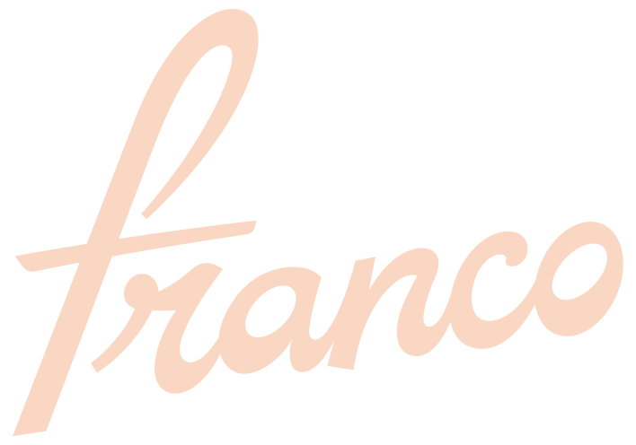
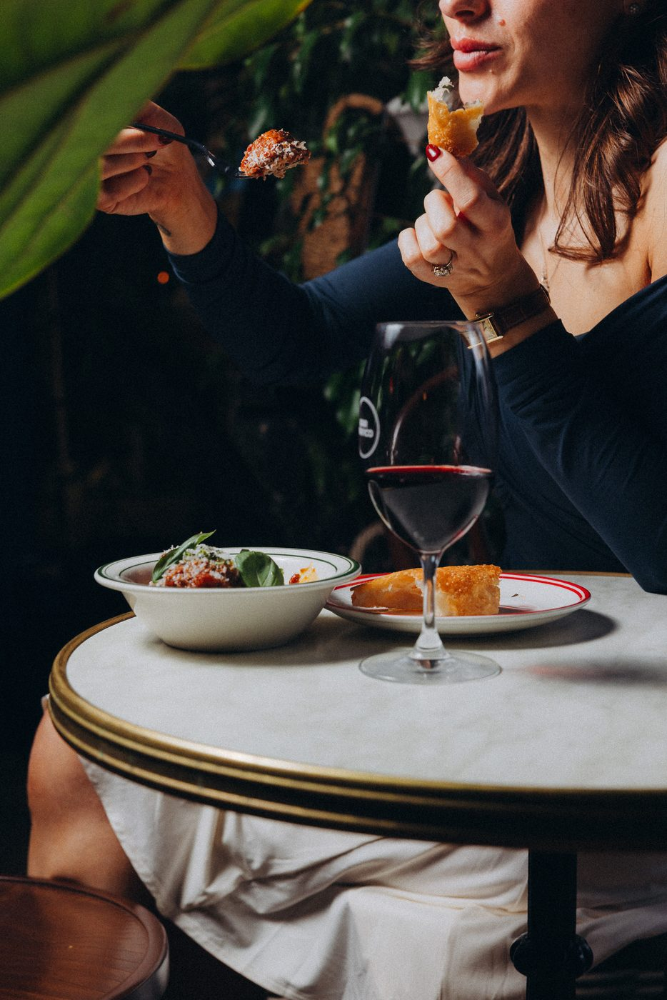

In the open kitchen · Christchurch CBD
Pasta fresca
in Christchurch
Rolled, cut and cooked in view — the pasta is the heart of the Franco kitchen. Silky tagliatelle, pillowy gnocchi and whatever the season calls for, made by hand upstairs.
Rolled daily in the open kitchen
Every day the kitchen rolls pasta fresh — watch it happen from the dining room upstairs. No shortcuts, no dried substitutes.

Pasta fresca
Pici cacio e pepe
Pecorino romano, black pepper — the Roman classic, done properly.
Cavatelli, vongole e 'nduja
Clams, chives, a little Calabrian heat.
Gnocchi di ricotta
Gorgonzola crema, mushrooms, brussels sprouts, walnuts.
Tagliatelle al ragù
Free-farmed pork, parmigiano, chives — the slow one.


It changes with the seasons
From a slow ragù to cacio e pepe done properly, the pasta moves with the seasons. Vegetarian, vegan and gluten-free always on hand — just ask.
Questions
Is the pasta made in-house?
Rolled fresh in the open kitchen upstairs — you can watch it happen.
Do you have gluten-free pasta?
Yes — tell us when you book or order and the kitchen will look after you.
Can I see the menu first?
The full food and drinks menus are on the Menus page.
When does the kitchen open?
Daily from 5pm, till late. The bar opens at 4pm.
Mangia
A plate of fresh pasta and a glass of something Italian. Kitchen daily from 5pm.